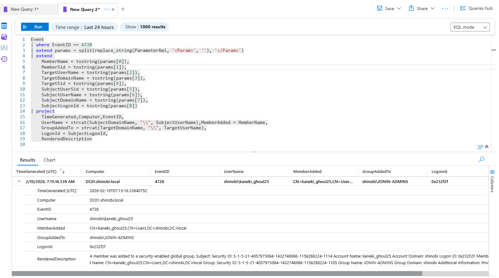
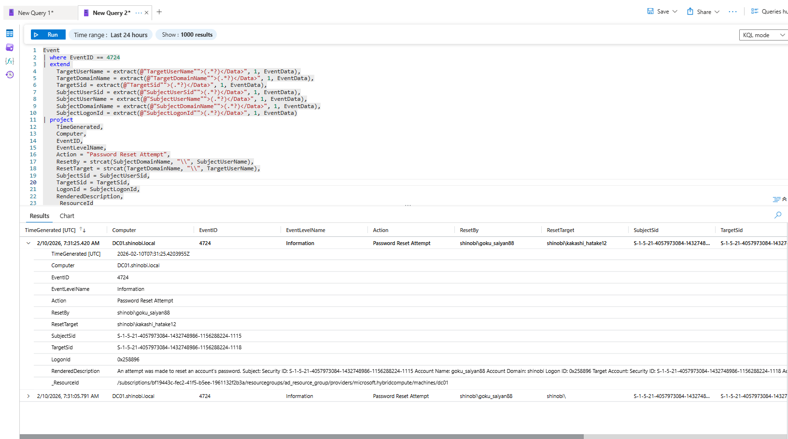

Detection & Telemetry (DACL Abuse)
Attack Vector: Attackers (kaneki_ghoul25 and goku_saiyan88) exploited GenericAll permissions to execute administrative tasks (Group Expansion, Password Resets) without being members of the Domain Admins group.
Detection Strategy: Standard privilege escalation attacks (like Golden Ticket) have static signatures. DACL abuse uses legitimate Windows APIs (net rpc, dsacls). Therefore, detection relies on Contextual Anomaly Detection—identifying standard users performing privileged actions they typically should not have access to.
Data Source: Event Table (Windows Security Log).
Key Event IDs:
Objective: Detect when a low-privileged user adds themselves (or others) to a high-value security group. Logic: The query parses the XML data within Event 4728 to extract the MemberAdded (Who was added) and the SubjectUserName (Who did the adding). A "Self-Add" event where the Subject and Member match (or the Subject is not a known admin) is a high-fidelity IoC.
KQL Query:
Event
| where EventID == 4728
| extend params = split(replace_string(ParameterXml, '<Param>', ''), '</Param>')
| extend
MemberAdded = tostring(params[0]),
TargetGroup = tostring(params[2]),
SubjectUserName = tostring(params[6]),
SubjectDomainName = tostring(params[7]),
LogonId = tostring(params[8])
| project TimeGenerated, Computer, EventID, SubjectUserName, MemberAdded, TargetGroup, LogonId, RenderedDescription
Analysis:
shinobi\kaneki_ghoul25CN=kaneki_ghoul25... to group shinobi\JONIN-ADMINS.
Objective: Detect the "Force Change Password" attack. Logic: We monitor Event ID 4724, which specifically logs an administrative reset of a password. This is distinct from Event 4723 (User changing their own password). The query extracts the Subject (Attacker) and Target (Victim) to highlight the abuse relationship.
KQL Query: (Based on your successful detection in Screenshot 2026-02-10 162856.png)
Code snippet
Event
| where EventID == 4724
| extend
TargetUserName = extract(@'TargetUserName">([^<]+)<', 1, EventData),
SubjectUserName = extract(@'SubjectUserName">([^<]+)<', 1, EventData),
SubjectUserSid = extract(@'SubjectUserSid">([^<]+)<', 1, EventData),
TargetSid = extract(@'TargetSid">([^<]+)<', 1, EventData)
| project
TimeGenerated,
Computer,
Action="Password Reset Attempt",
ResetBy=strcat("shinobi\\", SubjectUserName),
ResetTarget=strcat("shinobi\\", TargetUserName),
SubjectUserSid,
TargetSid
Analysis:
shinobi\goku_saiyan88shinobi\kakashi_hatake12goku_saiyan88 executing a password reset on kakashi_hatake12. Since goku is not a Domain Admin or Help Desk user, this indicates the abuse of the User-Force-Change-Password extended right (DACL Abuse).
{kind=link}
{kind=link}